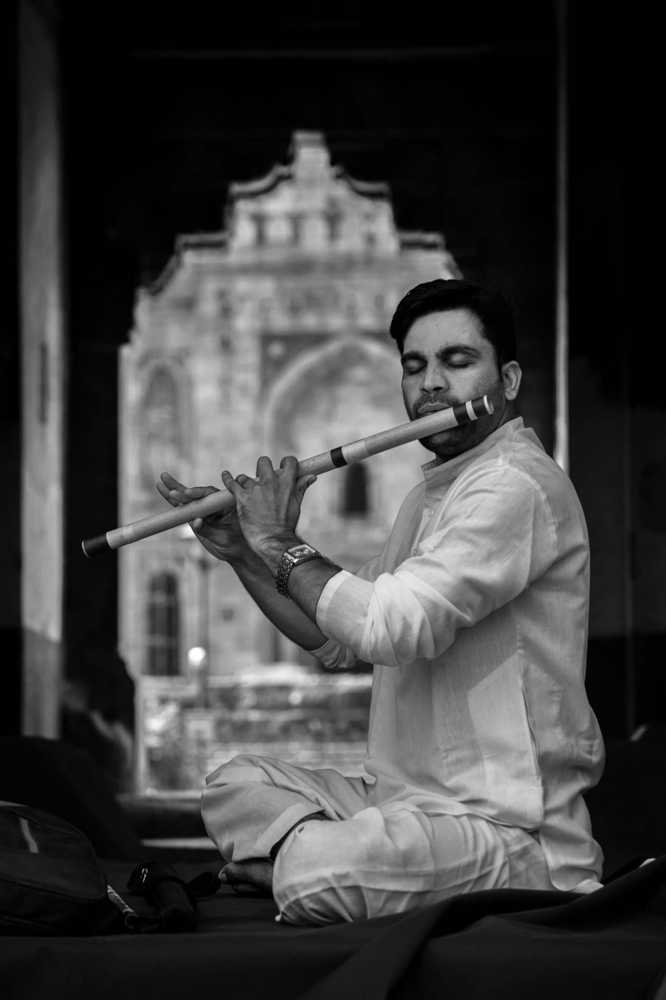
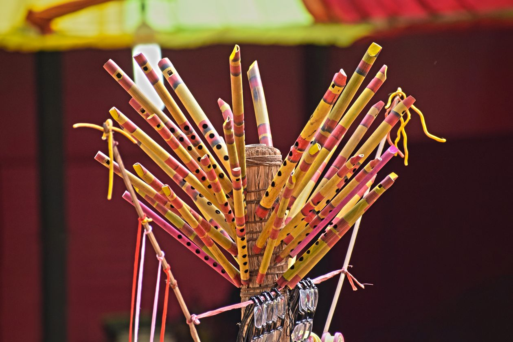
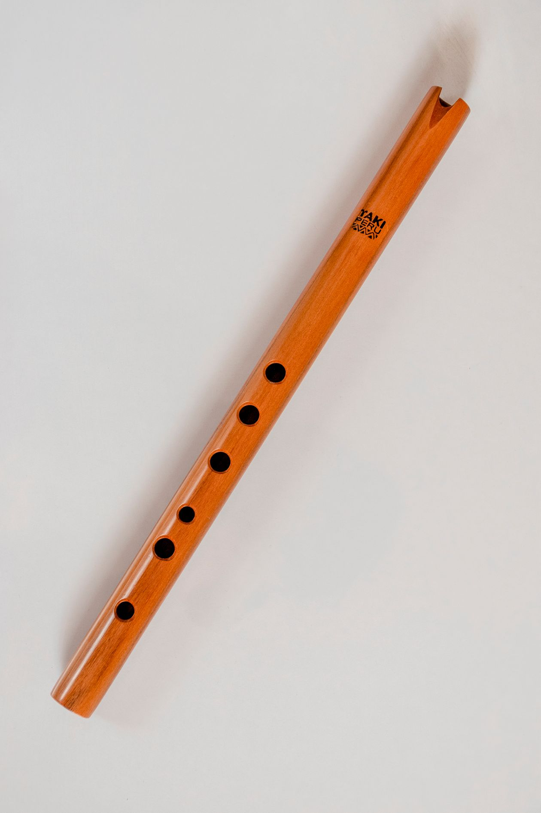

About · EPK · The instrument
The player, and the bamboo
The story first, then the working facts a booker or a student actually needs: bios in two lengths for your programme, the flute sizes and what each is for, how bamboo is cared for, the rider, and how lessons are built.
Nikhil Vartak began the bansuri at eleven, in a Pune school where the music teacher kept a box of bamboo flutes and strong opinions. The opinions won. He trained for fourteen years under his guru, Pandit Shrikant Lele, in the gayaki-influenced manner the Maihar tradition is known for — the flute taught to sing, phrase by phrase, the way a vocalist would.
The apprenticeship was the old kind: years of long tones before repertoire, service at the guru’s concerts before a stage of his own, and a standing instruction that has shaped this whole site — learn which hour a raga belongs to before you learn the raga.
Since 2012 he has played solo baithaks and sabha concerts across Maharashtra, accompanied khayal vocalists, recorded for independent film, and taught a small studio of students in Pune and online. He plays flutes made in Pune and Miraj, and carries nine of them, from the E bass to a small G.
Short bio — for listings (50 words)
Nikhil Vartak is a Pune-based bansuri player trained in the Maihar tradition under Pandit Shrikant Lele. Known for concerts programmed by the raga’s traditional hour — dawn Bhairav, midnight Malkauns — he performs solo, accompanies vocalists, records for film, and teaches a small studio in Pune and online.
Long bio — for programmes
Nikhil Vartak (b. 1990, Pune) took up the bansuri at eleven and trained for fourteen years under Pandit Shrikant Lele, absorbing the gayaki ang of the Maihar tradition: the flute as a singing voice, built on long-tone discipline and the vocalist’s sense of phrase. His concert work is organised around the samay chakra, the traditional assignment of ragas to hours of the day — a dawn baithak opens with Bhairav in near-darkness; a late chamber concert closes in Malkauns. As an accompanist he is valued by vocalists for restraint: the flute answers, it does not compete. His session work for independent film translates directors’ briefs into raga choices, recorded in graded takes for the edit. He teaches one-to-one in Kothrud, Pune, and online, with a published curriculum and an honest account of what a year of practice buys. He plays bansuris made in Pune and Miraj, in keys from E bass to G.

Press & programme notes
Promoters may use the short or long bio above verbatim, and the reference photographs on this page with their Pexels credit lines. There is no studio portrait of the artist in this template pack; if your programme needs one, ask — a sitting can be arranged at booking.
The instrument
Bansuri sizes — the tonic is the name
A bansuri is named by its tonic: with all six finger holes closed, it sounds its Sa, and that note names the flute. Six finger holes and a seventh, smaller one below for the flattened notes the ragas ask for. Bigger flute, deeper voice, slower speech — the choice of flute is a musical decision, not a habit.
| Flute (tonic) | Approx. length | Character | Used for |
|---|---|---|---|
| E bass | ≈ 30 in | Deep, breathy, slow-speaking | Vilambit alap; Bhairav and Malkauns at their own hours |
| E | ≈ 26 in | The concert standard; warm middle voice | Most solo work; the scale on the Concerts page is tuned from this Sa |
| F | ≈ 24 in | Brighter, quicker ornaments | Accompanying vocalists whose Sa sits higher |
| G | ≈ 21 in | Light, agile, folk-tinged | Dhuns, Bhairavi closers, lec-dems with children |
| C (small) | ≈ 15 in | High and keen | Student demonstrations; matching a high tanpura |

Caring for bamboo — the honest page
Bamboo is a grass, not a hardwood, and it behaves like one. Students ask about care constantly, so here it is in the open:
- Oiling: the bore is oiled lightly with mustard or almond oil every few months — a thin film on a soft cloth, never a soak. It keeps the bore from drying and sharpens the response.
- Cracking: cracks come from sudden dryness and heat — a flute left on a car dashboard in May is a flute at risk. Store at room humidity, away from radiators and direct sun.
- Playing in: a new flute is played briefly at first — fifteen minutes, building up over two weeks — so the bamboo takes moisture gradually.
- Thread bindings: the cotton bindings are not decoration; they restrain the bamboo at its weakest points. A loose binding is re-wound, not glued.
- Lifespan: a well-kept concert flute gives ten to fifteen years before its voice dulls. It is a renewable instrument — which is part of its honesty.
Concert rider — what the venue provides
- Format: baithak (floor seating, cushions) preferred for solo work; stage seating acceptable. The flute is a quiet instrument — rooms up to ~250 seats work unamplified.
- Ensemble: tabla player and tanpura (electronic tanpura acceptable) arranged by the artist unless agreed otherwise.
- Sound, if amplified: one condenser microphone on a stand at seated chest height; no DI, no effects, a dry monitor at low level.
- Timing: for hour-specific ragas the start time is contractual — a Bhairav concert that starts at 8 am is a different, lesser concert.
- Green room: a quiet room and warm water. That is the whole hospitality rider.
Lessons — how they are built
- Beginners (months 1–6): breath and embouchure, the scale in two octaves, alankars, first raga Bhupali. A playable student flute (E or F) costs ₹800–₹2,500; guidance given before you buy.
- Intermediate (year 2): two ragas a term with bandish and structured improvisation; tala literacy with practice apps and then a real tabla player.
- Advanced: alap architecture, hour-true programming, accompaniment etiquette — by audition from the intermediate studio.
- Terms: weekly 60-minute lessons, ₹1,500 each or ₹5,000 per four-lesson month, paid in advance; one reschedule per month at 24 hours’ notice.
Booking terms, plainly
Dates are held for seven days on a written enquiry, and confirmed on a 40% advance. The balance falls due on the day of the performance. Cancellation by the booker: the advance is returned in full at 30+ days, half at 14–29 days, and retained inside 14 days — the date will have turned other work away. If the artist cancels, every rupee is returned and a substitute accompanist of equal standing is offered where the format allows. Travel outside Pune–Mumbai is billed at cost, agreed in writing before confirmation.
